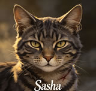

What Is a Kittypet in Warrior Cats
If you've spent any time in the Warrior Cats books, you've heard clan cats mutter "kittypet" like it's a dirty word. And honestly? Yeah, a kittypet is exactly what it sounds like - a regular house cat who lives with Twolegs, eats from a bowl, sleeps on a fluffy cushion, and has never had to catch their own mouse. To a ThunderClan warrior raised on fresh-kill and the warrior code, kittypets look soft, lazy, and frankly a little pathetic.
But here's the thing - the books keep proving that first impression wrong. Some of the bravest, most loyal, and most important cats in the whole series started out as kittypets. One of them saved the clans. So while clan-born cats will keep looking down their noses at house cats, the rest of us know better. Here's everything worth knowing about the kittypet warrior cats who actually mattered.
Meet the Famous Kittypet Warrior Cats
These are the kittypets that readers actually remember - the ones Erin Hunter spent more than a page on, the ones with real personalities, and the ones whose choices actually changed clan life. A few of them joined a clan and became warriors. A few stayed house cats their whole lives and still managed to influence the story anyway. All of them are worth knowing, so let's get into it.



Kittypet Warrior Cats - Character Profiles
🏠 Smudge - The Loyal Friend Who Stayed Home
Smudge is the cat most readers remember first when they think of kittypets in Warrior Cats. He's a long-haired brown-and-white tom, lives right next door to where Rusty grew up, and wears a little bell on his collar. He and Rusty used to hang out at the fence line, share prey, and basically act like brothers. Then Rusty wandered into the forest, met Bluestar, and never really came back.
Smudge shows up a couple of times in the original arc trying to convince Rusty - now Fireheart - to just come home. He keeps telling him the Twolegs miss him, the house feels empty without him, life out there in the wild is way too hard. Here's the tragic part about Smudge: it isn't that he's weak or that he doesn't get his friend. He gets it perfectly. He just can't follow. The forest took his best friend and gave him back a stranger with a warrior name and clan scars, and that's gotta hurt. Read the full Smudge Warrior Cats guide →
👑 Princess - Firestar's Sister, Lifelong Kittypet
Princess is Rusty's littermate - Firestar's actual sister, a fact that doesn't get nearly enough attention. While Rusty was off becoming the prophesied leader of ThunderClan, Princess stayed in the Twoleg house, grew up, had kits of her own, and lived a quiet, comfortable life that clan cats would call wasted but most of us would call pretty good honestly.
She shows up during the time when Fireheart is still an apprentice, dealing with the complicated feelings of leaving his family behind. The books make it pretty clear that Princess and Rusty cared about each other, and that her staying a kittypet while he became a warrior was its own kind of quiet sacrifice - she kept the home fires burning, in a way. Her appearances later in the series kinda hint that she had more going on than the clan cats gave her credit for. Read the full Princess Warrior Cats guide →
🔥 Rusty - The Kittypet Who Became Firestar
Of all the kittypets in the Warrior Cats books, Rusty is the one who mattered most. An orange tabby tom with a torn ear from a dog fight, Rusty walked into ThunderClan territory one day and just refused to leave. Bluestar took a chance on him, gave him the apprentice name Firepaw, and the rest is basically the history of the entire series. Without Rusty, there's no Firestar. Without Firestar, the clans don't survive the destruction of the forest, Tigerstar's coup, or the journey to the lake.
What makes Rusty's story special isn't just that he became a great leader. It's that he never really stopped being a kittypet in his heart. He still missed soft moss, warm Twoleg nests, and the easy life he'd left behind. He just decided that the warrior code and his clanmates were worth the discomfort. For a cat who'd never been taught to hunt, fight, or patrol, learning all of that - and then mastering it well enough to lead a clan through multiple apocalypses - is the most impressive character arc in the books. Read the full Rusty Warrior Cats guide →
💕 Millie - The Kittypet Who Found Graystripe
Millie's story is honestly one of the most romantic in the whole series. She started as a kittypet living near a Twoleg farm, and she met Graystripe when he was a loner, freshly exiled from ThunderClan and trying to figure out who he even was without his clan. Most kittypets would have walked away from a bedraggled loner tom with zero prospects. Millie fell for him hard.
When Graystripe finally decided to head back to the clans, Millie came with him. She had to learn to hunt, fight, and survive in the wild - skills she'd never needed in her cushy house life. And she had to watch her daughter Briarlight get hurt in the same accident that crippled her, then spend years learning to care for a kit who couldn't walk. Through all of it, Millie just stayed. She proved that love and loyalty aren't inherited from clan bloodlines - you choose them. Read the full Millie Warrior Cats guide →
🧓 Purdy - The Old Kittypet Who Became an Elder
Purdy is one of those characters you don't really appreciate until you're older yourself. He's an elderly, plump, long-haired blue-gray tom with a habit of complaining about the cold, the damp, and the younger cats who don't know how things used to be done. He spent his whole life as a kittypet and only joined ThunderClan late in life as an elder.
What Purdy brings to the series is straight-up perspective. He's seen enough Twolegplaces and Twoleg behavior to give the clan genuinely useful advice about humans. He's grumpy, opinionated, and totally unapologetic about being lazy with warrior duties - and that's exactly why readers love him. He's proof that a kittypet can serve a clan without ever learning to catch their own mouse, as long as they've got stories to tell and a warm spot in the elder's den. Read the full Purdy Warrior Cats guide →
🐾 Cody - The Kitten Taken by Twolegs
Cody is a small gray-and-white she-cat who shows up in the Power of Three arc. Her big moment in the series comes when Twolegs snatch her from near the clan border - the same group of Twolegs who later take Leafpaw. Her disappearance is one of the things that pushes Leafpaw to follow the trail and end up in a Twoleg nest herself.
Cody doesn't have a ton of page time, but her story still matters because it shows how scary the Twoleg world looks from a clan's point of view. To a clan cat, getting taken by Twolegs is basically one of the worst things that can happen to you. To a kittypet like Cody, the Twoleg nest is what she's used to - but being separated from her mother and her home is still terrifying. Her short arc is a small, sharp reminder of why kittypets and clan cats never quite see eye to eye. Read the full Cody Warrior Cats guide →
🐈⬛ Henry - The Old Neighbor Cat
Henry is an elderly black-and-white tom who lives in Firestar's old Twolegplace. He's one of those quietly charming background characters who shows up just often enough to become a fan favorite. After Firestar leaves his housecat life behind, Henry becomes the friendly old face waiting at the fence line whenever clan patrols pass through.
Henry's whole deal is just being a good neighbor. He's not dramatic. He's not brave. He's just a kind old kittypet who waves the clan cats through his territory and drops some gossip about what the Twolegs are up to. In a series full of prophecies, battles, and straight-up villain cats, Henry is a welcome breath of normal cat life. Read the full Henry Warrior Cats guide →
🌙 Sasha - The Kittypet Who Became Tigerstar's Mate
Sasha has one of the roughest starts of any kittypet in the series. She was a house cat with a comfortable life until her Twoleg died and her owner's family just... dumped her. Dropped her in the woods with no warning, no prep, and zero idea how to survive. She had to learn to hunt, fight, and stay alive entirely on her own, which is something clan-born kits get months of apprenticeship to figure out.
Then she met Tigerstar, and yeah, things got worse. She didn't know he was a murderer. She didn't know he'd been exiled from ShadowClan. She just saw a strong, confident tom who seemed to care about her. They had three kits together, including Hawkfrost and Mothwing, before Sasha figured out what Tigerstar really was. Her story is a quiet tragedy about a kittypet who trusted the wrong cat and then spent the rest of her life dealing with the fallout. Read the full Sasha Warrior Cats guide →
🐈 Hattie - Smudge's Neighbor
Hattie is a brown tabby she-cat who lives next door to Smudge in the original Twolegplace. She shows up in the same early books where readers first meet Smudge, and she's one of the few kittypets the books explicitly call a kittypet instead of a loner or rogue.
Hattie doesn't have a huge role in the main plot. What she does have is a small but memorable presence that adds real texture to the kittypet world. She, Smudge, and the other neighborhood cats basically create a tiny community that mirrors clan life in some ways - they have their own territories, their own friendships, their own gossip. It's a nice reminder that the Twolegplace isn't just background. It's a whole world the clan cats barely understand. Read the full Hattie Warrior Cats guide →
🌊 Bella - The Lake Territory Kittypet
Bella is a brown she-cat who lives near the lake territories, and she shows up more than once across the later arcs. The official Warriors family tree and cast lists confirm her as a kittypet, which makes her one of the more persistent background kittypets in the series.
Bella's biggest contribution to the books is just keeping the lake kittypets present in the reader's mind. After the clans settled by the lake, the borders between clan territory and Twolegplace got kinda complicated. Bella and the other neighborhood cats became regular features of the new world, showing up whenever the clans had to deal with Twoleg expansion, new monsters, or just plain curious house cats wandering into the wrong place. Read the full Bella Warrior Cats guide →
Why Kittypet Warrior Cats Matter to the Story
Clan cats love to look down on kittypets. Soft paws, never known hunger, can't fight, can't hunt, can't track. Most of the cats raised in the clans genuinely believe kittypets are weaker, dumber, and less worthy than they are. the entire premise of the warrior code is built partly on the idea that clan life makes better cats.
The books keep poking holes in that idea, and that's the whole point. Firestar - the most important cat in the series - was a kittypet. Millie, who helped raise a generation of ThunderClan warriors, was a kittypet. Sasha, who raised two of the most powerful cats in the second arc, was a kittypet. Even the kittypets who never joined a clan, like Smudge and Princess, gave the main characters reasons to question their assumptions about who really belongs in the forest.
The Kittypet Question
What actually makes a warrior? Clan cats would say it's training, bloodline, the warrior code, and a deep connection to the forest. Kittypets don't have any of that on day one. But they do have something the clans can't really teach: a perspective from outside. A kittypet who chooses clan life is choosing it on purpose. They're giving up warmth and food and safety to do something harder. That kind of choice, made over and over, is what makes Firestar, Millie, and the rest of them such compelling characters.
Kittypets as Story Mirrors
Kittypets also work as mirrors for the clan cats themselves. Every time a kittypet proves themselves, it forces the clans to ask how many other cats they've dismissed as soft. Every time a kittypet stays in the Twolegplace, it forces readers to ask whether clan life is really better or just different. The books never fully answer that question, and that's by design. The tension between clan and kittypet is one of the things that keeps the whole series interesting long after you've memorized who the villains are.
Kittypet Warrior Cats - Frequently Asked Questions
What is a kittypet in Warrior Cats?
A kittypet is just a regular house cat who lives with Twolegs (that's the Warriors word for humans). They eat from bowls, sleep in soft nests, and have zero clue how to hunt or fight. Clan cats generally consider them soft, but the books have shown over and over that some of the bravest cats in the series started out as kittypets.
Which kittypet becomes the most important warrior in the series?
Rusty, the orange tabby kittypet who became Firestar. He's basically the prophesied fire that saves the clans, and most readers consider him the central character of the entire Warrior Cats series. Without his decision to leave his kittypet life behind, none of the later books would have happened the way they did.
Are kittypets allowed to join a clan?
Yeah, although it's not super common. The warrior code lets a leader accept cats from outside the clan, and several kittypets have joined over the course of the series. Firestar joined ThunderClan as an apprentice. Millie joined as a warrior. Purdy joined as an elder. Other kittypets, like Smudge, Princess, and Henry, chose to stay house cats.
Who is Smudge in Warrior Cats?
Smudge is Rusty's next-door neighbor and best friend from the Twolegplace. He's a long-haired brown-and-white tom who wears a bell collar. He shows up a few times in the original arc trying to convince Fireheart to come home and is one of the most memorable kittypets in the series precisely because he never gives up his house cat life.
Who is Princess in Warrior Cats?
Princess is Firestar's sister. She stayed in the Twoleg house where Rusty grew up and remained a kittypet for the rest of her life. Her existence is a quiet reminder that Firestar's choice to become a warrior was a choice, not an inevitability, and that the family he left behind had its own life going on.
Did Sasha start as a kittypet?
Yeah. Sasha was a house cat whose owner died, after which her owner's family released her into the wild. She had to learn to survive on her own, eventually became a loner, met Tigerstar, and became the mother of Hawkfrost, Mothwing, and Tawnypelt. Her story is one of the saddest in the series.
Can a kittypet become a clan leader?
Absolutely. The most famous example is Firestar, who started as Rusty the kittypet and eventually became leader of ThunderClan. He led the clan through the destruction of the forest, the journey to the lake, and multiple wars, and is generally considered the greatest leader any of the clans have ever had.
What is the difference between a kittypet and a loner?
A kittypet is a house cat who still lives with Twolegs, eats from a bowl, and has a soft life. A loner is a cat who has left Twoleg life behind and lives in the wild on their own, usually because their owner died, moved away, or just dumped them. Sasha is a good example of a kittypet who became a loner.
Explore More Warrior Cats Clans and Characters
Kittypets are just one corner of the Warrior Cats world. The clans, their territories, and their warriors are worth exploring too:
- ThunderClan Warrior Cats - The forest clan that Firestar built
- RiverClan Warrior Cats - The river cats and the loner Sasha ended up near
- ShadowClan Warrior Cats - The dark forest clan that produced Tigerstar
- Smudge Warrior Cats - Rusty's loyal Twolegplace buddy
- Princess Warrior Cats - Firestar's sister who never left home
- Rusty Warrior Cats - The kittypet who became ThunderClan's greatest leader
- Millie Warrior Cats - The kittypet who crossed the forest for love
- Sasha Warrior Cats - The lonely kittypet who loved the wrong cat
- Warrior Cats Name Generator - Create your own Warrior Cats name